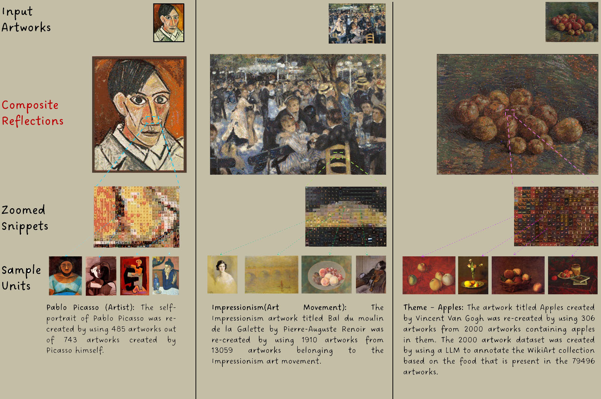
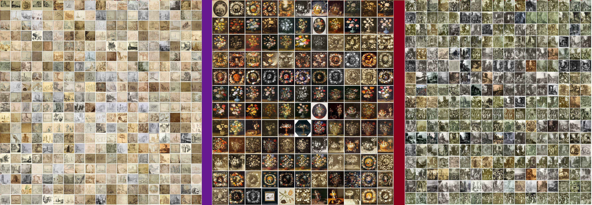
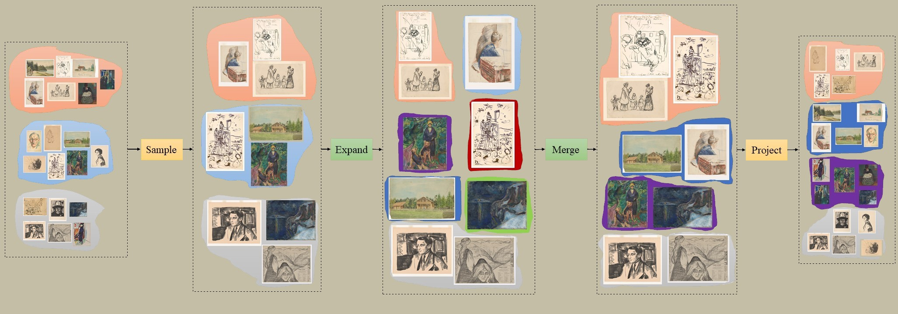
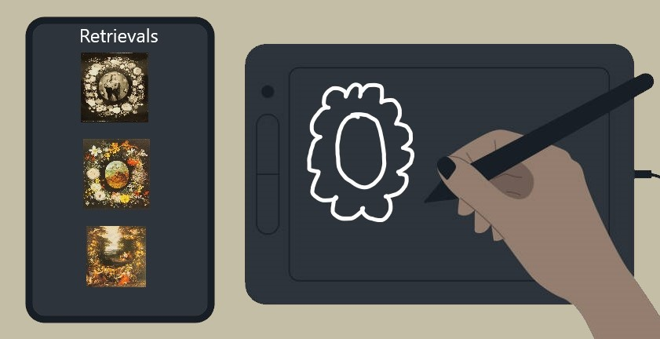
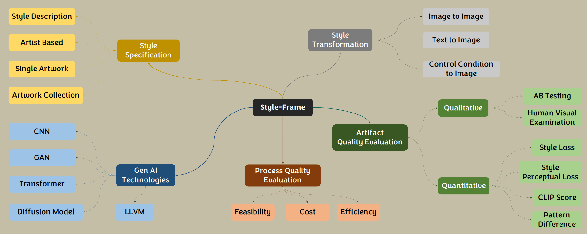

Developed an application that takes an input artwork and re-creates a mosaic version of the input artwork based on a user specified themed artwork collection. The themed artwork collection is created using an Agentic AI.

Style-based Clustering of Visual Artworks
Developed an application that utilizes deep neural networks and Large Vision Language models to identify the styles present in an artwork collection and cluster the artworks based on their style similarity. This approach improves the style clustering metric scores by 17% over the state-of-the-art approaches.

Capturing the subjectivity of style-clustering by utilizing Human Preference
Developed an application that is able to identify the user's preference of style by taking their input and incorporating it into a clustering algorithm to achieve style-based clustering based on the user's definition of style.

Exploring an artwork collection through your own Art
Developed an artwork retrieval system for the MUNCH Museum that enables a user to explore an artwork collection by allowing them to retrieve artworks in an artwork collection similar to their own drawing. This approach utilizes unsupervised learnt representations to match the artworks to the user input drawing.

StyleFrame: A Foundational Framework for Artistic Style Driven Applications
Designed a software design framework that guides architects, engineers and researchers through the differents phases of developing an style-driven AI applications.
